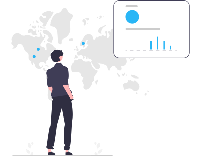
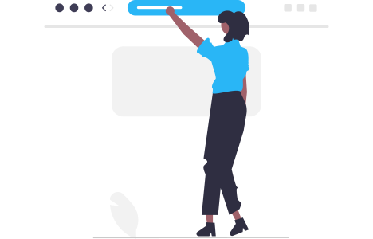

Despadronização dos Dados
Agora, focando na despadronização dos dados (quando os usuários inserem o mesmo tipo de
informação de
maneiras distintas), iremos fazer uma validação no front end da aplicação, utilizando máscaras, para que
essas cheguem no back-end já normalizados.
Padronização dos
Documentos
Tratando dos documentos, começando pelo CPF, verificaremos sua validez através de seus dígitos
utilizando códigos em Javascript. Já outros documentos (RG e CNH) serão validados através de fotos
tiradas pelo próprio cliente feitas com reconhecimento de imagem através de nossa API com Python (Mais
informações).
API de Validação
Python
Primeiramente, o cliente escolherá um dos documentos e, em seguida, tirará uma foto. Essa, no back-end
da aplicação, será transformada em uma String64 e, em seguida, transportada pela nossa API dentro de um
código JSON. Esse código, será interpretado e seu conteúdo (String64) será utilizada para a criação da
imagem do documento e, a mesma, terá seu conteúdo selecionado e armazenado. Esse conteúdo será
padronizado, inseridos em um novo código JSON e, por fim, retornando pela API para a aplicação, restando
ao cliente confirmar as informações retornadas.

Autenticação
Em relação ao e-mail e telefone, utilizaremos o método de autenticação em dois fatores para validar a
veracidade. Isso será feito por meio de uma API criada pelo time de desenvolvimento que fará a
integração com as rotinas do Google Authenticator.
Validação de
Endereços
Por último, no endereço, utilizaremos a API ViaCEP que valida o CEP e, caso exista, retorna dados
complementares do mesmo, restando ao cliente apenas inserir o número e complemento.

Transação de dados para o Banco de Dados
Para enviar esses dados para o banco de dados, usaremos
REST
APIs, que são requisições que
permitem a comunicação de dados entre aplicações.